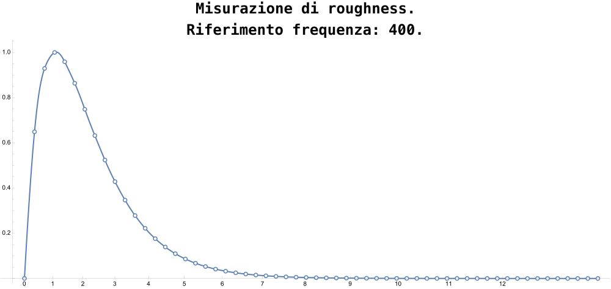
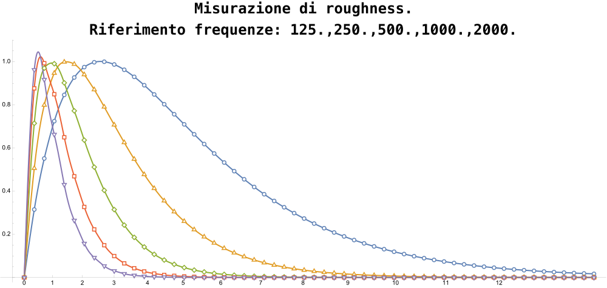
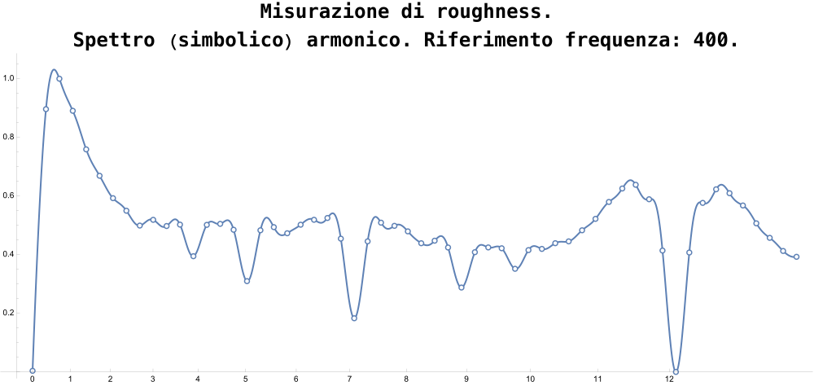
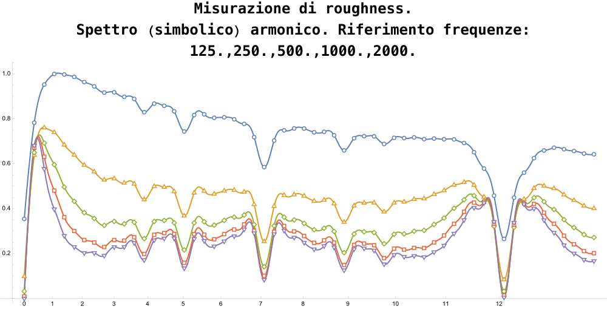
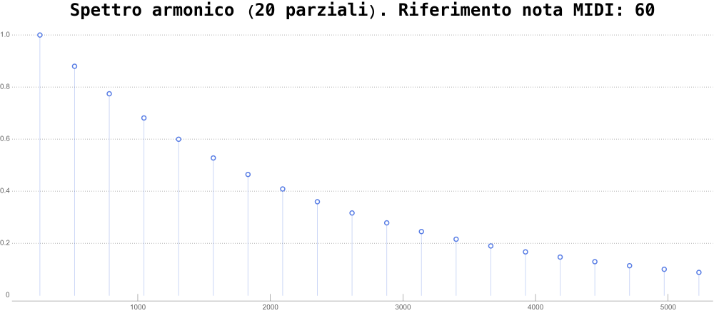
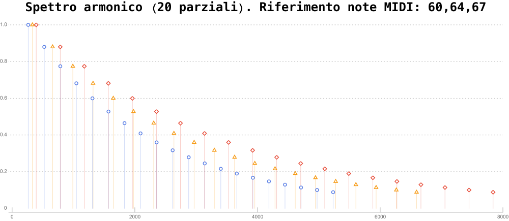
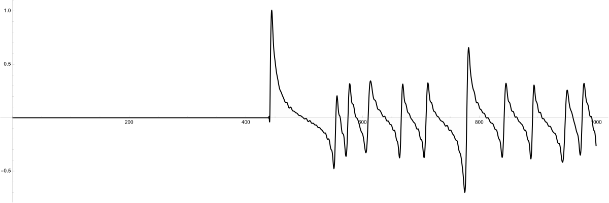
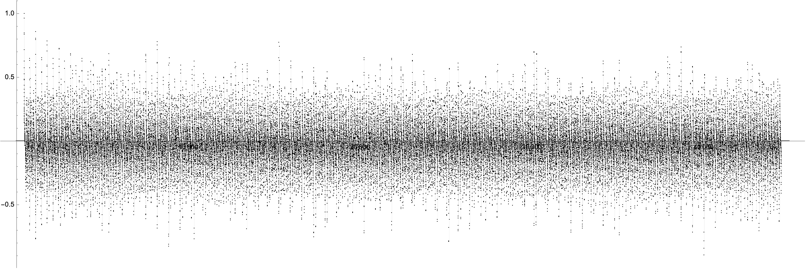
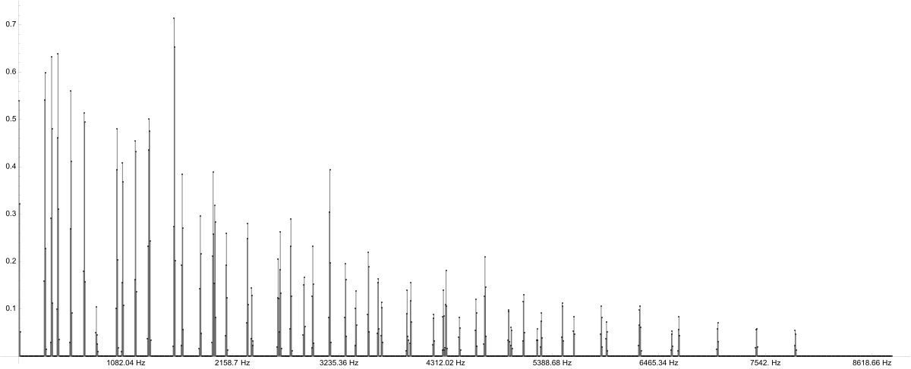

https://fv-c.github.io/mes-consba-2025
Punto di partenza: la ricorrenza
Il concetto di ricorrenza come oggetto centrale della prassi compositiva, dalla tradizione sino alle frontiere computazionali.
Ricorrenze osservabili a diversi livelli:
- pattern melodici
- figure ritmiche
- configurazioni armoniche e timbriche
IpotesiLa ricorrenza è
misurabile tramite
una serie di parametri quantitativi
La roughness
Una definzione
Misura della dissonanza percepita mediante l’ascolto di un evento sonoro, avente un determinato contenuto spettrale
- Percezione di “asprezza” del suono
- Massima quando:
- due parziali sono abbastanza vicini da interagire
- ma non così vicini da fondersi in un unico tono
- Legata ai concetti di:
- banda critica
- mascheramento e densità spettrale locale
Sethares (1993): timbro, scala e consonanza locale
- Articolo chiave: “Local Consonance and the Relationship between Timbre and Scale”.
- Idea centrale:
- la consonanza/dissonanza dipende dallo spettro, cioè dalla disposizione dei parziali
- dato uno spettro, si può calcolare la roughness
- si può costruire una curva di dissonanza in funzione dell’intervallo

Un modello intuitivo
Consideriamo due sinusoidi di frequenza \( f_1 \) e \( f_2 \):
- \(|f_1 - f_2|\) molto piccolo (quasi nullo) → roughness bassa
- \( |f_1 - f_2| \) “intermedio” → battimenti, poi roughness alta
- \( |f_1 - f_2| \) grande → due toni separati, roughness in diminuzione

- si possono progettare scale “intonate” al timbro, minimizzando la roughness


Misurazioni di roughness simbolica
Si considera una rappresentazione astratta: pitch-class set, accordi, strutture intervallari
Procedura tipica:
- associare a ogni pitch class il relativo spettro ideale

- generare tutti i parziali simbolici del PCS

- applicare il modello di misurazione roughness
\( R = \sum_{i=1}^{N} \sum_{j=i+1}^{N} a_i a_j \left( e^{-3.5 \frac{|f_i - f_j|}{s(f_i,f_j)}} - e^{-5.75 \frac{|f_i - f_j|}{s(f_i,f_j)}} \right) \)
Local consonance and the relationship between
timbre and scale. Sethares, W. A.
(1993)
RisultatoLa roughness diventa una proprietà della struttura simbolica
Misurazioni di roughness spettrale
Rappresentazione digitale (1)

Rappresentazione digitale (2)

Trasformata di Fourier (TF) decompone un segnale nel tempo nelle sue componenti frequenziali, fornendo una rappresentazione spettrale dell’energia distribuita sulle frequenze.
Dopo la TF:

roughness tempovariante.
Simbolico e spettrale: perché sono assimilabili
- In entrambi i casi:
- abbiamo un insieme di frequenze e ampiezze
- applichiamo la stessa logica di calcolo (somma di contributi di coppie)
Roughness come parametro di ricorrenza
- roughness come descrittore spettrale
- Su questa curva si possono individuare:
- pattern ricorrenti
- configurazioni tipiche di una sezione, di un motivo, di un “gesto” orchestrale
- Sul piano simbolico possiamo analizzare la roughness di famiglie di insiemi, trasformazioni, varianti, e studiare come queste ricorrenze si riflettono nel segnale
Obiettivo
usare la roughness come ponte tra
- ricorrenza strutturale (partitura / dati)
- ricorrenza percettiva (ascolto)
Desumere logiche da iniettare in strutture computazionali.